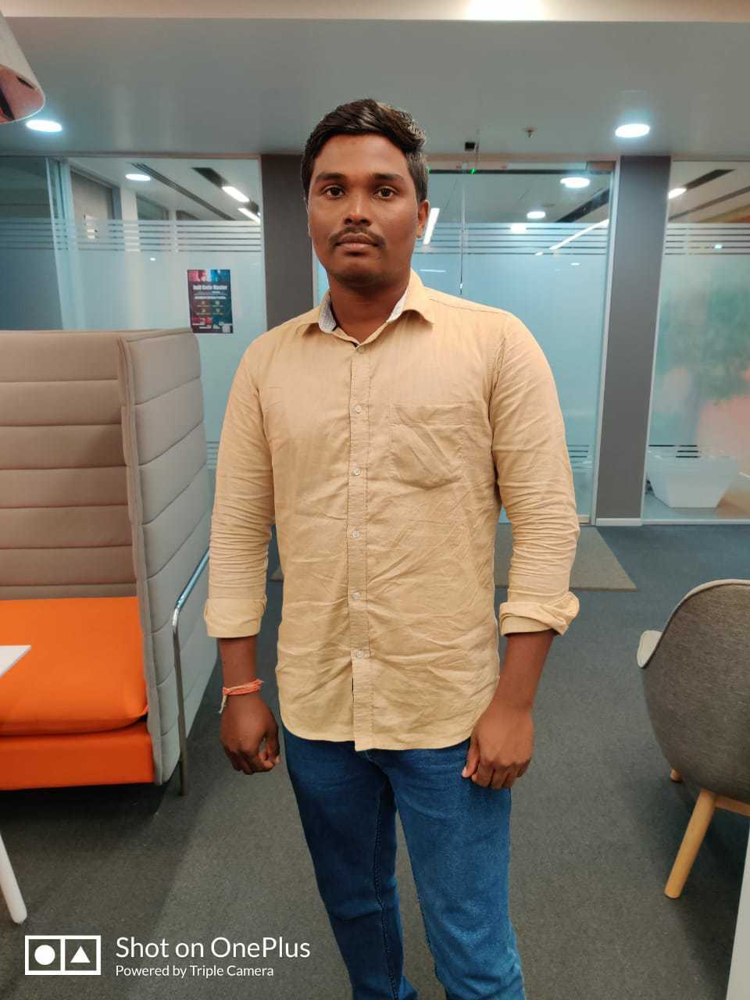

Primary Number: 8939963079
My Number : 9965604980
Name : M.Anbazhagan
DOB : 10-Sep-1990 @ 7.00 PM
Age : 30
Height : 5.5 Feet
Weight : 70 KG
Birth Place : Chengalpet
Community : Vanniya Kula shasthriyar
Caste : MBC - Naicker
Education : MCA - Regular -> Valliammai Engineering College
Company : Ideas2IT Technologies PVT LTD
Work location : Gunidy
Designation : Senior Engineer
Role : DevOps Engineer
Salary : 45000 Rupees Take home per Month
Mother Name : Dhakshayani.M -> Homemaker
Father Name : Mannathan. A -> Working in BSNL
Siblings : one younger brother working in Nissan
Property : 2 acre farm in hometown with pump shed and 41 cent land in thirukatchur near SP koil & Own home
Address : No 38, Bajani Koil Street,
Mullikulathur (Village & post)
Thirukkazhukundram Taluk,
Chengalpet Dist ,
Groom Photos
